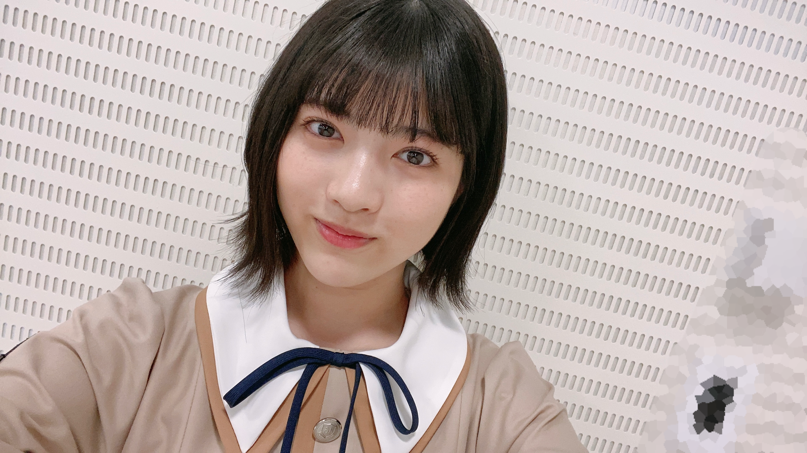
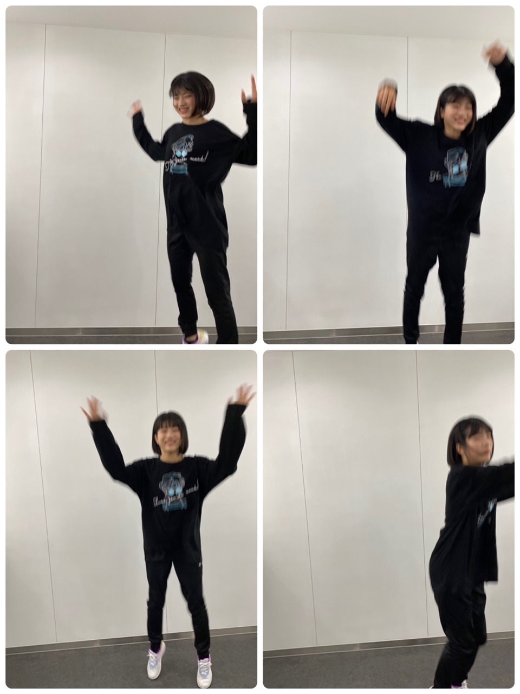

2020/1110Tueお疲れ様です！先輩方とのお話が主です。林瑠奈です。
本日もお疲れ様です。
乃木坂46、4期生の林瑠奈です。
神奈川県出身高校2年生17歳
華咲くセブンのティーンの林瑠奈です。
負けるなしょげるな林瑠奈、今日も1日頑張るな
(ピンポーン)
40周目となりました、ブログリレー。
最近ふと思ったことなんですが、(いや、この後の文脈的に"最近"はまだ使いたくない)
以前は、『〜○周目となりました、ブログリレー』の定型文の後、一つ波があってから本題へと入っていたんです。 近況とか近況とか...
でもここ何周か、というかしばらくの間、さらっと本題へ入っていたなと思いまして。
そういえばここは、最近の出来事を書く場所やったぞと思い出したのであります。
はい。
【ノギザカスキッツACT 2】
昨晩からスタート致しました。
シーズン2となります今期からは、3期生の方々と共に番組をやらさせて頂いています。
心強い皆さんと一緒に、より良いものを作っていけるよう誠心誠意頑張らさせて頂きます。

以前、ACT 2のビジュアル撮影があった際のことを少し。
先日ののぎおびでも話させていただいたのですが、3期生の先輩とのことです。
ブログで"お話ししてみたい先輩"として挙げさせて頂いて、そこから連絡を取らせて頂いていた、吉田綾乃クリスティーさん。
ブログを見てくださり、わたしの誕生日の際に連絡をくださった、中村麗乃さん。
推しメンとして挙げさせて頂いている、
伊藤理々杏さん。
3期生さんとコミュニケーションを取るチャンスだと思っていたこの日に、御三方に話しかけることに成功致しました！！
皆さんで『いっせーのーせ』をされているのを見て、いつ話しかけに行こうかと迷った挙句、あやてぃーさんに
「いま話しかけに行ってもいいですか？」
とメールをして承諾を得ましたので、さやかに付いて来てもらって、出陣しました。
その後、あやてぃーさん、れのさん、りりあさんとさやかとわたしの5人で『いっせーのーせ』をやらせていただいて、もうもの凄く嬉しかったです！
あやてぃーさんがりりあさんに耳打ちをして、わたしは『好きだよ！』と。りりあさんに言っていただきました。
嬉しい！愛しい！世界一！
色々お話しさせて頂けて、とても楽しかったです。
林の積極性ステータスが成長しているのではないかと自分ながらに思っています。
ノギザカスキッツACT 2、よろしくお願い致します！！
...........................................................................
そんなお優しいあやてぃーさんが、この間お仕事ですれ違ったとき、造花の桜の花びらを置いてくださいました。

無事、守り抜きました。
...........................................................................
『乃木坂46 4期生ライブ 2020』
12月6日(日)に、4期生ライブを開催させて頂けることが発表されました。
16人でライブをさせて頂けること、本当に有難いなと思っています。
皆さんに楽しんで頂けるように、
盛り上がり過ぎて次の日の皆さんは、疲労で遅刻をかますだろうというぐらいの熱量を届けますので、よろしくお願い致します！！
4期生の頼れる師範たちにお世話になりながら、頑張らさせて頂きます。
...........................................................................

『世界で1番 孤独なLover』での衣装です。
上記のように3期生さんとコミュニケーションを取ることに成功した林は、前日リハーサル、当日も先輩方に話しかけることに挑戦しました。
そうなんです、だから生写真にサインをして頂くことができたのです。
当日リハーサルの際にわたしが歩いていたら、後ろからりりあさんが寄ってきてくださいました。
お、おはようございます！しか言えなかったです。
皆さん本当にお優しくて、れのさんもあやてぃーさんも横を通ったときに声をかけてくださったりして、暖かさが五臓六腑に染み渡りました。
もう染みすぎてふやけそうな勢いでした。
うれしかったです☺︎

なおが撮ってくれた写真です。
鳥になろうとした様です。
...........................................................................
明日はミュウちゃんです。
ご指導ご鞭撻の程よろしくお願いします。
アディオス！！
先日ののぎおびにて、「夏野菜カレーが好きです。でも今年は食べれてないんですよ。」とわたしが言っていたようで、
それを聞いた母親が『絶対夏野菜カレー食べてるはず』と断言してきました。
忘れられていたのが悔しかったらしく、夏野菜カレーを作ってくれました。

P.S.黙りか、喋りか、無理か
声だけで癒されるし可愛いと散々言ってました。
りかお疲れ様、めっちゃ可愛かった☺︎
かしこ
2020/11/10 15:06

PROFILE
新4期生リレー
202104
| SUN | MON | TUE | WED | THU | FRI | SAT |
|---|---|---|---|---|---|---|
| 1 | 2 | 3 | ||||
| 4 | 5 | 6 | 7 | 8 | 9 | 10 |
| 11 | 12 | 13 | 14 | 15 | 16 | 17 |
| 18 | 19 | 20 | 21 | 22 | 23 | 24 |
| 25 | 26 | 27 | 28 | 29 | 30 | |

コメント(170)
ノギスキ3期生が揃って楽しそうだった〜
これから〜
負けるな、しょげるな､頑張るよ〜
他にも衣装着てる姿見てみたいので楽しみにしてます！オンライン？現地？どうなるのかはわからないけど、必ず観たい！パフォーマンスも楽しみにしてます！頑張って！
先輩方との絡みシリーズ好きだから多くの人と関わって欲しい笑
あでぃおすぅ！！！
ライブ頑張って！楽しみにしているよ。
ー質問ー
・写真集を発売するならどこで撮影したい？
・乾燥肌に悩んでいるけど、良い対策はあるかな？
・冬の防寒は最大でどのくらいまでする？
ありがとう！次回も楽しみにしているよ。
ノギザカスキッツ、新たに3期生も加わり益々楽しみです。
ずっと好きだと言ってたりりあんと話せた喜びがめちゃめちゃ伝わってきます笑
積極性ステータスの向上が目覚しいですね。そして、さぁちゃんとの仲の良さもどんどん上がってますね。
そして、4期生ライブ。本当に嬉しいです。
16人だけでのライブ。
色々不安やドキドキもあるかと思いますが、配信ライブでも応援してます！
頑張れ
セカラバの衣装、めちゃくちゃ似合ってます！
嬉しいの舞が最高ですね笑
ブレブレでもガンガン伝わってきます。
お義母様との微笑ましいエピソード大好きです( ᷇࿀ ᷆ )
りかちゃん可愛かったね(*´`)
啓答 男爵芋
コメントは多分初めてさせて貰うと思います。
いつもはブログを読んで終わりだったのですが、読んでいって林瑠奈さんの面白さが出ていたり、個性が出ているなと思い思い切ってコメントさせていただきます。
林瑠奈さんは、普段料理などはどんなものを作りますか？
カレーを見て、とても上手だなと思い、可能であれば他にどんなのを作ったりしているのか教えてください。
今月の25日実は、誕生日なんです。お時間があれば、祝っていただけると嬉しいです。
それでは、アディオス！
2度見じゃ足りなくて
8度見くらいした笑
けーすけです♪
この時期にライブは激アツすぎ！
16人になってから
初の期別単独だからめっちゃ楽しみ！
3期の先輩とも距離縮めててツヨっ！
実は潜在的なコミュ力高いのでは？笑
また前のコミュ力を活かして
ノギスキでも3期との絡み楽しみにしてますね！
カレー美味しそうだな
今日はカレーにしようかな？
やっぱりシチューにしよ笑
bye
林のファン兼メンバーっぷりはすごいですねw
めっちゃ好きです！！
これからも応援します！！！
先輩って話したいと思っていてもなかなか話せなかったり話しかけるのに勇気いるよね、わかります。
掛橋ちゃんについてきてもらうというエピソードも可愛くて好き
4期生ライブめっちゃ楽しみ！もうすでにワクワクすぎて待ちきれません
お家でピンク色に染めたペンラを振り回して応援します
次のブログも楽しみにしております。
アディオス！！！！
短所を教えてください
私も気をつけないといけないかもしれません。
むむむ。
話しかけるのは私も緊張します。
電話も緊張します。
困ったものです。
相変わらずかわいい！！すき！！
4期生ライブおめでとう〜〜〜╰(*´︶`*)╯♡
受験勉強あるけどるなぴの歌って踊る姿が見たいので
絶対観ます！！＾＾
なんかるなぴのコミュ力が高すぎてすごいなぁ、、
私全然積極性ステータス高くないので尊敬です。。。
質問！
◉勉強する時って音楽とか聞いてる？？
体調に気を付けてね！！あぁ〜〜ライブ楽しみ！！！
「いっせーのーせ」の話たしかれのちゃんがのぎおびで話してたよ
たくさん話せてよかったね！！
４期生ライブ開催決定おめでとう！
今はこういう状況だけど、開催決定して良かったね！
これからたくさんライブ経験して、先輩みたいになれるといいね！！
愛媛県在住 中３女子 音より
追伸：今日も一日お疲れ様！
俺の指ｸﾞﾆｬﾝｸﾞﾆｬﾝだから羨ましい。
4期ラ楽しみにしてま〜す！
清宮大先生の出番だ!!
それはもう鳥なんよ。
野鳥研究家(？)の僕からすると雀よりのコンドルです。
わかりやすいな。
今、世界はアディオス！で終わる派閥とかしこで終わる派閥で分断された。運命やいかに。。
次回 ｢俺 死す｣ ﾃﾞｭｴﾙｽﾀﾝﾊﾞｲ!!!
ノギスキACT2は3期生が入ってさらにパワーアップしてて
面白かったよ！
本日、会社の内定式でした。
自宅から結構遠かったので行くのが大変でした、
りょうたです。
四期生ライブ決まったね。おめでとう！！
もう少し先の話になるから詳しいことはわかんないけどとりあえずしっかりライブを見ようと思いますね。
友達も見たいって言ってたし特にI see…が見たいとのこと。そう思ってる人結構多いんじゃないかな？本来はもうライブで披露されてるはずなのに…
テレビ披露以外だったら初のライブという形での出演やから緊張すると思うけどさあなたらしくやってくれることを期待してます。
どういうふうになるかわかりませんが全員センターみたいな事がもしあったらバレッタのセンターしてそうという勝手な想像。
まぁ今日はこれくらいで。体調に気をつけて
アデュー
もうブログも40回目なんだね！
いつも面白くて、読んでて楽しいです！
あと、4期生ライブも楽しみです！
おっと、いけね…
負けるなしょげるな林瑠奈～
世界で1番 孤独なLoverは好きな曲だわ～
MVが良いんだよなあ
赤の衣装言うよりは制服で腰にカーディガン？を巻いて街中を疾走するチャリンコってイメージ
そして…最近気になる、負けるなしょげるな林瑠奈の喋り方と雰囲気が好き
どんな演出やパフォーマンスがあるのか
楽しみです
当分は無観客・配信ライブだけど
いつかそれが終わったら
ステージにいる瑠奈ちゃんを直接
観てみたいなって思ってます!
またライブで遠くまで行ってみたい
いつも乃木坂として色んな活動
をしてくれて本当にありがとう。
今日も瑠奈ちゃん大好き
あでぃおす(かしこ)
4期生単独コンサートも絶対みます！
今回はコメントしたいことがたくさんあるけどまずは4期生単独ライブ開催決定おめでとう！
世間的に配信で開催するしかない状況だけどチケット運が最悪な自分にとってはむしろ嬉しいです(笑)
当日は画面の向こうから全力で応援します！！
そしてノギザカスキッツACT2も始まったね！
前回はいたるところで活躍されてたから今回も楽しみにしてます(笑)
今回から3期生も加わるしそれこそ仲のいい先輩方とのコントも見てみたいな
#1で阿佐ヶ谷姉妹さんが出てきてたからゲストの芸人さんも出てくるようになるのかな？
好きな芸人さんともコラボできたりするといいね！！
とにかくこれからも楽しみが尽きなくて幸せです(笑)
体調には気を付けて頑張ってね！！
あなたはセンターに立つ人間です！
私の眼が錆びついてなければ...
林瑠奈は 誰もが憧れる存在になる！
信は力なり！
きっかけを 掴みとれ！
チャンスはそうおおくない。
その時が いつ来ても良いように、
日々の自己管理を怠らず、心身を整えておくこと！
夏野菜カレーを食べたことを忘れているようでは 笑、
未来を決める 大切な出会いに 気づかないぞ！
負けたらあかんで！
YELL
よろしくお願い致します！！
ピンポーン
おはようございました〜〜〜
40周も続くとブログの流れとかも忘れますね笑
ノギスキまだ見てないので次感想いいます！
1枚目めっちゃかわいい！！
もはや主人公感ある！！ちなみに左右で
アシメになってるんですか？
目のキラキラ具合えげつないですね！
いっせーのーせとか、地方によってそもそも
掛け声違ったりしません？関西と関東で結構違うよね
やっぱり積極性ステータス成長してるのね！！
素晴らしいわ！勇気と努力すごい！
造花でも守り抜く優しさ笑
ライブ楽しみー！
赤が似合う！姫じゃ！！気品が漂っとる！！
俺喋りかけるか迷った結果喋らんの多いから
尊敬するわマジで笑
お、おはようございますなの初々しくて好き笑
五臓六腑好きやねはやし。
ふやけてる様かと思ったら鳥でした。笑顔が◎
一枚分、物撮り入れるあたりはやし斬新笑
たしかにりかちゃん可愛かったね
吉村さんがスーパーアシストしてて良かった笑
アディオス！！
まいやん卒業したので心の推しに殿堂入りして
はやし推しとして恥ずかしくないようTwitter
プロフィール更新しました笑
別冊乃木坂どこへみたよ！告白トリでワクワクしてたら
めっちゃネタで逆にはやしらしくて萌えでした笑
他の人見てる間の反応がおもろかった笑
P.S.ananで回鍋肉とかラブライブの話してて
ほんまに好きなんやなって思った笑
今周の嬉しい！愛しい！世界一！とかも笑
かしこ わっしょいより 敬具
赤い衣装よく似合っててとっても可愛い
ノギスキACT2の瑠奈ちゃんも楽しみにしてます!
夏野菜カレー。かぼちゃが入っているのが好きです(甘党)
よく給食に出てました
40周目おめでとう〜
月日に換算するとどれくらいか気になって計算してみたら
およそ6ヶ月くらいになりました！
半年経つのはあっという間ですね…
近況報告もありがとう！
スキッツACT2の放送が白石麻衣さんの卒業コンサート後だったから
時間軸が違って少し混乱しました(笑)
けれど瑠奈ちゃんのコミュ力は確実に成長してるね。
同期が仲良いのはもちろんのこと
期別の話を聞くと乃木坂の良さを強く感じます。
ビジュアル撮影の話の中で書いてある
「いっせーのーせ」っていうのは掛け声に合わせて
指を立てた数を当てた人が勝ちにならゲームのことかな？
自分の時は「指スマ」の名前だったから見た時は
なんのこと？ゲームっぽい…みたいに推察してました(笑)
鳥になろうとしてた写真は単純に喜んで飛び跳ねてるのかと思ったよ笑
忘れられていたのが悔しくて夏野菜カレーを作ったくれたお母さん優しいね(笑)
写真に映ってる具材がジャガイモに見えたのは僕だけでしょうか…
あと4期生ライブまで1ヶ月を切りましたね！
リハーサルも進んでいると思いますが家から近所迷惑にならない程度にコールをして応援してます！
最後に今日11/10は鈴木絢音さんの写真集発売日！
内容はどのページも美しいかったですよ〜特に眼鏡カットは◎
瑠奈ちゃんも見たら是非感想を教えてください〜
またね！
先輩とお話しできてよかったですねーー
お母様ものぎおび、みてるんですね
夏野菜カレーいいですね。
また来年まで待ち遠しいですね。
ノギスキact2見ましたよ〜！
3期生も入ってすごくボリュームのあるメンバー構成になりましたね。
今回は3、4期生別々のスキットでしたが、混ざっているスキットがとても楽しみです。
混ざっても一際目立ちそうなるなぴを見るのが楽しみです。
セカラバの衣装すごく似合っていますね！
赤がいい感じで映えてます。
バード山崎さんに続いてバード林(？)笑
レイ師範代に教わったダンスを見るのが楽しみです！
とにかく今は乃木フェスでるなぴのカードを引きたいです(与田祐希会長のように)。笑
あでぃおす！！！
（ぴんぽーん）
3期生の先輩の優しさだね。
あやちゃんさすがだわ。
寒い日の毛布位の暖かさだわ。
暑すぎない優しい暖かさだね。
って、「最近の話」は「最近」について（笑）
ノギザカスキッツACT2の#1は本当に神回すぎて
今後もめちゃ楽しみ
そしてるなぴーは3期生ともっと距離縮められて嬉しいよ＼(^o^)／
ああ、5人の「いっせのせ」を見たかったなあ
そしてあやてぃーの「好き」発言はさすがあやてぃーだな(*´ω｀*)♡
今後も皆ともっとなかよくなれるように(/･ω･)/
おーー、これはもしかして・・・林瑠奈の手のアップ？(ﾟдﾟ)！（笑）
4期生ライブは凄く楽しみ
16人最高のライブ出来上がるように＼(^o^)／
鳥になろうとしたるなぴ可愛すぎるよ(*´ω｀*)♡♡♡
もっとこういう一面を見たいよ、もっとこういう写真ほしいよ＼(^o^)／
（最初は先輩と会話できた際の喜びだと思った（笑））
お母さんはのぎおびを見たか？（笑）
そして真っ茶色の画像（笑）
これからも頑張って(/･ω･)/
おーー、らじらー聴いた？さすがだな
今後4期生の中「んだりか」の呼び方が流行りそうと思う？（笑）
チャァオ〜〜〜〜!☆彡
めちゃめちゃ〜お嫁さんにしたいほど〜〜
タイプなぁ〜可愛い〜〜〜⤴️⤴️⤴️
るなちゃんに、質問です❔❤️❤️❤️❤️❤️笑顔
質問なんです❕❔❤️❤️❤️❤️❤️笑顔
夏野菜カレーの写メ〜〜！？〜〜
野菜がルーに隠れていますけど〜〜〜
めちゃめちゃ〜〜狙いましたかあ〜〜〜❔❤️❤️❤️❤️❤️笑顔
(るなちゃん頑張ってねぇ❕❤️❤️❤️❤️❤️笑顔)
(頑張るんだよ❕❤️❤️❤️❤️❤️笑顔)
(＠＾▽゜＠）ゞ❤️❤️❤️
ノギザカスキッツACT2、はじまりましたね。昨日見ましたよー。瑠奈ちゃんの芸の進歩が楽しみです。
4期生ライブおめでとう！必ず見ます。瑠奈ちゃんのライブ見ることができてうれしい。
白石さん卒業コンサートでの「世界で1番 孤独なLover」のお衣装、可愛くて綺麗。一番好きです。
瑠奈ちゃんの出番が色々と増えてうれしいです。
コメントする